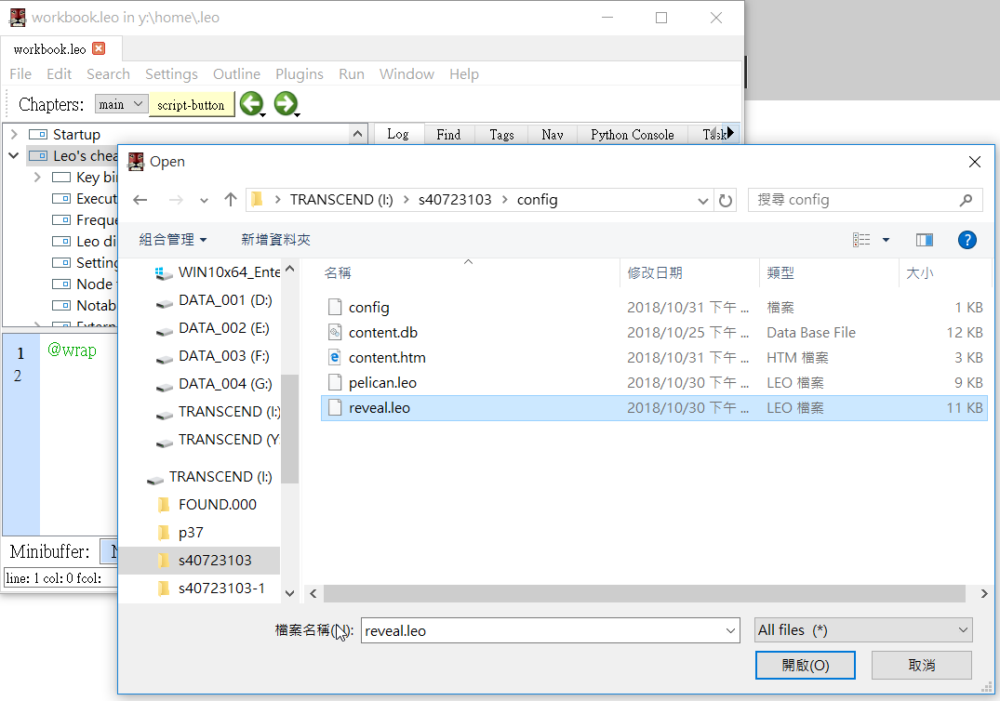
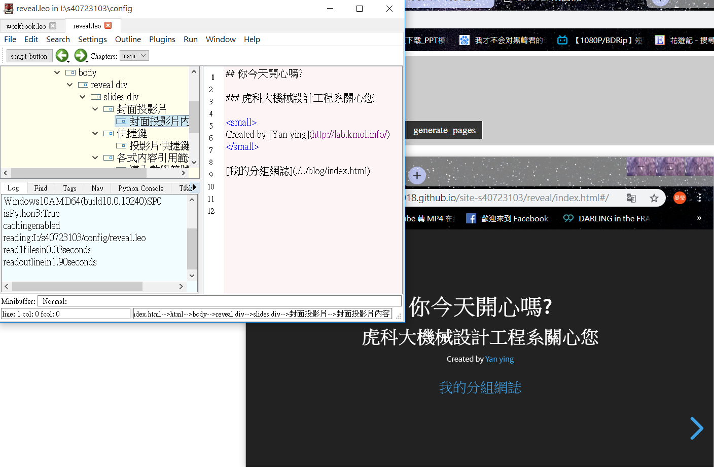
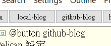
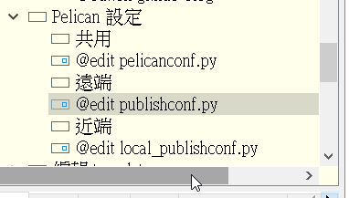
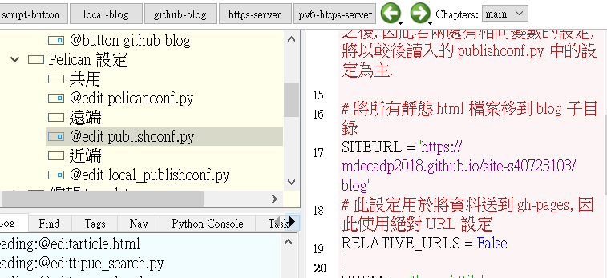
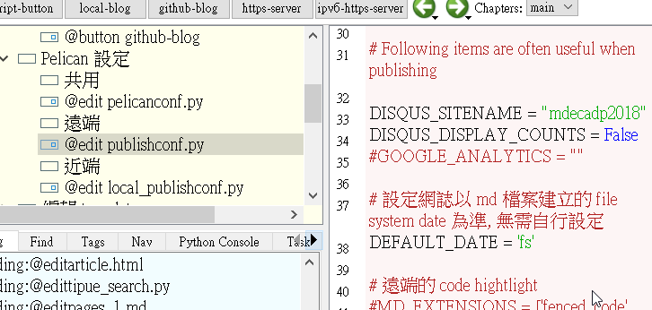

Week1 << Previous Next >> Week3
Week2
投影片更改
1.將reveal.ieo丟入workbook.leo裡面

2.開始隨意更改.完成

網址更改
1.將pelican.leo丟入workbook.leo
2.按近端local-blog右鍵Goto Script，之後再按一次local-blog

3.按遠端下的@edit.publisheonf.py(在公用裡面)

4.更改17行的網址，更改成"https://mdecadp2018.github.io/site-s40723103/blog"
.
更改33行的網址，"mdecadp2018"

5.按遠端github.blog右鍵Goto Script 在按一次github.blog
Week1 << Previous Next >> Week3